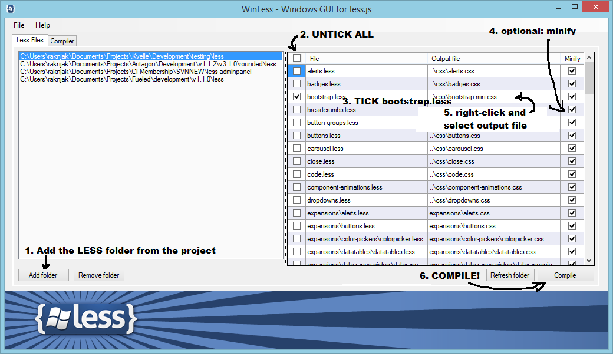

Last updated: January 30, 2015.
Warning BootKit 1.0.0 is not compatible with this new version 2.0.0. Too many changes were made in the core code because some limitations in the first design were holding back further expansions.
Warning Animate.css was removed from this version: it is quite easy to include into any project and it bloats the CSS files unnecessarily.
Explanations are divided in sections which you can read on the home page.
In a nutshell, you can do anything you want with a wide range of extra classes at your hands.
To understand BootKit one also needs to have basic knowledge of the following skills:
BootKit has a class-based structure meaning we will be adding extra classes to existing Bootstrap elements to enhance their visual appeal. When before using many classes inside an HTML document was frowned upon, today it is a valid technique to maximize class usage and to keep the CSS file small (Bootstrap is bloated enough as it is).
The classes from bootKit core do not take that much disk space but when we start adding extra plugins like SlimmScroll or Sparklines The disk size of a Bootstrap CSS file could rise fast: these plugins don't always have LESS code and their CSS is probably not always optimized. Be aware of this when adding third-party plugins.
For this and many other good reasons it is advisable to use file compression.
Remark:
Most classes can be used anywhere in your project without having to put it inside a bk-widget panel.
The clases that are constraint to bk-widget wll be explicitly mentioned.
Please use the contact form on the bottom right of this screen.
Contains all the bootstrap CSS files. Use the minified version in your live projects; the non-minified
version is useful when debugging with your preferred browser inspector. If you can, gzip your Bootstrap files server side for even better loading times.
Also contains the separately compiled bootkit CSS files.
CSS:
atelier-dune-light.css: used for styling code in the manual;
not-in-project.css: styles used uniquely for documentqtion qnd previewing purposes.
JS:
Contains some stuff like HTML Shiv and respons.js and the code highlighting files.
The bootkit folder holds some JavaScript that is needed for Bootstrap components and vendor plugins to work.
Container for Font Awesome, Glyphicons and Weather Icons.
Where your images could be stored.
Folder for only Bootstrap JS files.
bootkit: contains all BootKit LESS files - kept separately from Bootstrap LESS structure.
bootstrap: contains all Bootstrap LESS files.
vendor: contains third party tools like Font Awesome, Simpleweather, Weather Icons, slimScroll, Sparkline.
Contains third-party plugins needed for scrollbars, animations and skycons (mostly JavaScript files).
Want to get started with a fresh Bootstrap project? All you have to do is replace the Bootstrap CSS file with the one in this project. All default Bootstrap functionality is kept available and untouched (except for bootstrap.less which is the place where bootkit styles are imported).
<!-- Bootstrap core CSS -->
<link href="css/bootstrap.min.css" rel="stylesheet"><!-- Bootstrap core CSS -->
<link href="css/bootstrap.essentials.min.css" rel="stylesheet">Need to integrate it into an existing project? I highly encourage you to work with LESS:
@import "bootkit/core";
If you really must, use the file bootkit.essentials.min.css. The file is only 20kB but still try LESS!
There's also a full featured file sized 25kB called bootkit.essentials.css. Use this one when you need everything. Use LESS though, seriously.
<!-- Bootstrap core CSS -->
<link href="css/bootkit.essentials.min.css" rel="stylesheet">
There are two ways to compile:
- Advised: directly into Bootstrap (e.g. compile bootstrap/bootstrap.less to bootstrap.min.css)
- stand-alone (e.g. compile bootkit/core.less to bootkit.essentials.min.css)
Without any one of these the product is incomplete but will still work with the limited set of classes available. This serves as an example of how we can cherry-pick the tools we need. You can even comment out individual rules in the LESS files.
There are a few alternatives out there so this is just one software example.
Compilation is done by including the bootstrap.less file in our builds. All the other files are loaded directly or indirectly by this file. We compile less/bootstrap/bootstrap.less (or less/bootkit/core.less for just the essentials).
Example for WinLess:

If anything is unclear or when you have trouble loading or compiling, do not hesitate to contact me through my CodeCanyon profile.
CSS FILES EXPLAINEDIn the css folder we have these files:
When compiling only the bare essentials - or a custom setup with only those classes needed - we can
comment out lines in less/bootkit/core.less.
Comment out LINE 24 - 59 to get only the essential BootKit classes.
You can fine-tune by commenting out even more, most less files work separately from the others.
If you want to compile stand-alone you will have to UNcomment lines 10-16 to make sure we catch all dependencies.
Compiling the essentials only WITHOUT Bootstrap is done by compiling less/bootkit/core.less directly to css/bootkit.essentials.css or css/bootkit.essentials.min.css.
Compiling the bare essentials only WITH Bootstrap is done by compiling less/bootstrap/bootstrap.less directly to bootstrap.essentials.css or bootstrap.essentials.min.css.
Compiling EVERYTHING WITH Bootstrap is done by compiling less/bootstrap/bootstrap.less directly to bootstrap.css or bootstrap.min.css.
jQuery slimScroll
jQuery Sparklines
Simpleweatherjs
skycons
Font Awesome
Weather Icons
UI Faces
Bootstrap